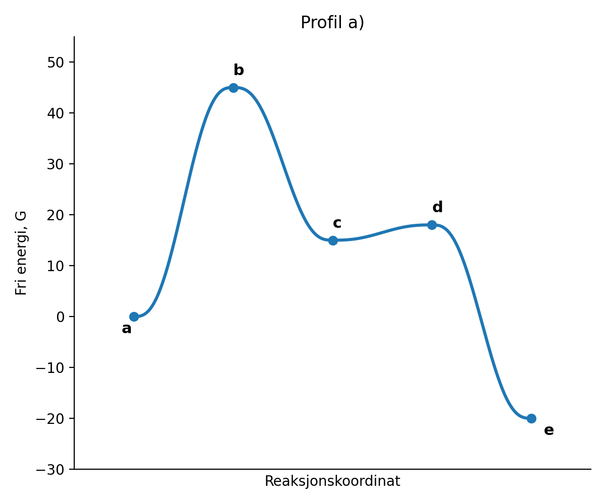
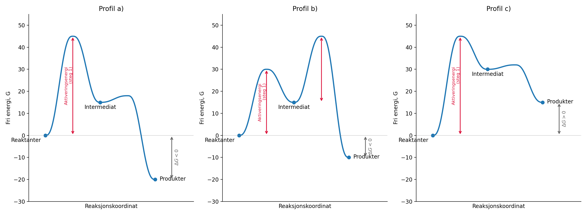
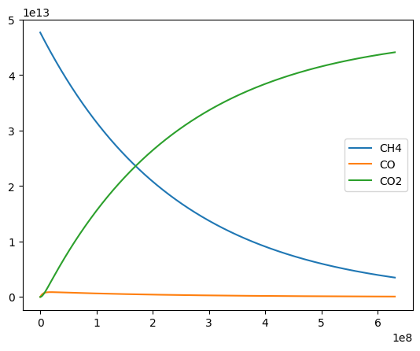
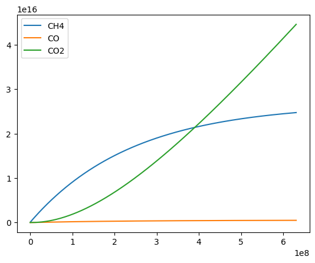
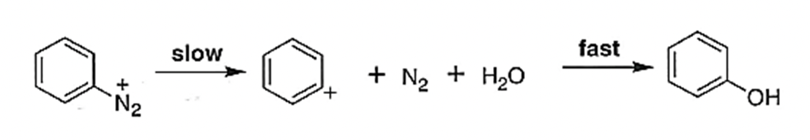
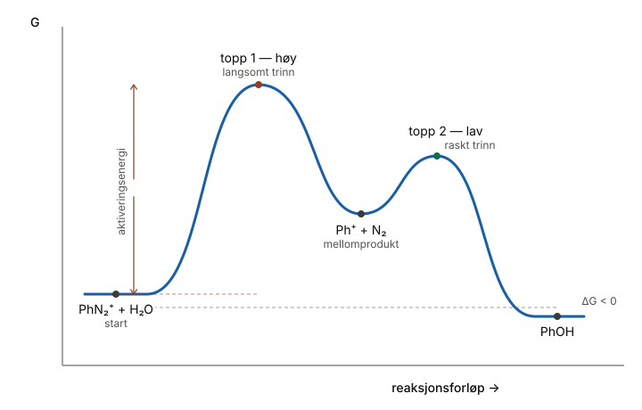

Uke 12 – Kinetikk#
Diskusjonsoppgaver#
Oppgave 1#
a) Hva skal til for at en reaksjon skal være termodynamisk gunstig?
Svar
En reaksjon er termodynamisk gunstig når endringen i fri energi er negativ, \(\Delta G < 0\) (for konstant trykk og temperatur). Dette er en nødvendig betingelse for at reaksjonen skal gå i den angitte retningen ved konstant \(T\) og \(p\).
b) Vil alle reaksjoner som er termodynamisk gunstige skje? Hvorfor? Evt hvorfor ikke?
Svar
Nei. \(\Delta G < 0\) sier bare at reaksjonen kan skje spontant sett fra et energiperspektiv, det sier ingenting om hvor raskt den skjer. Alle termodynamisk gunstige reaksjoner vil skje om man venter lenge nok, men i praksis kan gå så sakte at vi kan se bort fra de. Disse reaksjonene kalles kinetisk hindret, og kommer fra at aktiveringsenergien for reaksjonen er for høy, slik at hastighetskonstanten blir veldig liten.
c) Hva er hastigheten til en reaksjon? Hvordan finner man denne?
Svar
Hastigheten til en reaksjon er hvor fort den skjer. Det kan for eksempel måles ved gass-dannelse, pH, absorbans (eller andre karakteristiske og målbare egenskaper som forteller oss enten hvorf fort reaktanter brukes opp eller produkter dannes). Man finner så hastigheten ved å se på denne endringen som en funksjon av tid (endring av en størrelse over tid = den tidsderiverte).
d) Hvordan uttrykker man hastigheten til en 1. ordens reaksjon, \(A\rightarrow B\)? Hva er den avhengig av?
Svar
Hastigheten er her avhengig av konsentrasjonen av \(A\) (bortsett fra 0.ordens reaksjon) og hastighetskonstanten \(k\), som igjen avhenger av temperatur og aktiveringsenergi/katalysator. Ordenen til reaksjonen er avhengig av hvordan hastigheten endres i forhold til konsentrasjonen.
e) Hvilke enheter har hastighetskonstanten \(k\) for 0., 1. og 2. ordens reaksjoner?
Svar
f) Hastighetskonstanten \(k\) er gitt ved Arrhenius likningen \(k=A e^{-\frac{E_a}{RT}}\) . Hva forteller denne likningen oss? Hva står \(A\) og \(E_a\) for, og hvilke enheter har de? Hvilken påvirkning vil en endring i enten \(A\), \(E_a\) eller \(T\) ha på hastighetskonstanten?
Svar
Arrhenius-likningen gir avhengigheten av hastighetskonstanten \(k\) som eksponentielt av forholdet mellom aktiveringsenergien \(E_a\) og den termiske energien \(RT\). \(A\) er den preeksponentielle faktoren, som, forenklet forklart, relateres til hvor ofte molekyler kolliderer i riktig orientering. \(E_a\) er aktiveringsenergien, energibarrieren som må overvinnes for at reaksjonen skal skje. Arrhenius kom frem til at ratene fremover og bakover for en reaksjon burde ha samme form som van’t Hoff uttrykte likevektskonstanten ved, \(\frac{d\ln{k_f}}{dT} = \frac{E_a}{RT^2}\). Ved å integrere og ta eksponenten får man Arrhenius likningen med prefaktoren A.
Prefaktoren A vil ha en enhet som avhenger av hvilken orden hastighetsuttrykket har, mens \(E_a\) er en energi, og må dermed ha enhet i J (eller noe annet som vil deles vekk når delt på J/mol, slik at eksponenten blir enhetsløs.
Økt \(A\) gir proporsjonalt økt \(k\) (lineær økning).
Økt \(E_a\) gir eksponentielt redusert \(k\) (færre molekyler har nok energi).
Økt \(T\) gir eksponentielt økt \(k\) (flere molekyler har nok energi til å overvinne barrieren).
Det er viktig å påpeke her at Arrhenius likningen kun forteller sammenhengen mellom aktiveringsenergi og hastighetskonstanten, og ikke den totale hastigheten til en reaksjon. Hastigheten til reaksjonen er også avhengig av konsentrasjonen av reaktantene.
g) Hva er det hastighetsbestemmende trinnet?
Svar
Det hastighetsbestemmende trinnet er det tregeste trinnet i en reaksjon med flere trinn. Det hastighetsbestemmende trinnet vil være det med høyest energibarriere eller lavest hastighetskonstant. Siden de andre trinnene er langt raskere, er det dette trinnet som setter farten for hele den observerte reaksjonen, og vil i hovedsak være det vi kan observere/måle.
h) Vi ser nå på en reaksjon \(A+B\rightarrow C \rightarrow D\), der \(C\) er et intermediat. Reaksjonsprofilen for reaksjonen er vist i figuren under.
Fyll inn navn på punktene og tegn inn observert \(E_a\).
Hva er forskjellen på en overgangstilstand og et intermediat?
Er det andre faktorer enn \(E_a\) som kan være med på å gjøre et trinn hastighetsbestemmende?

Svar
For denne reaksjonsprofilen er steg 1 det hastighetsbestemmende. Det er fordi dette steget er det med høyest energi for å overkomme, og dette blir den observerte \(E_a\), som altså er også fra start-punktet, siden denne energien også kreves for å overkomme steg 1. Fordi \(E_a\) i det første steget er veldig høy, så er konsentrasjonen av intermediater veldig lav. Dette er to faktorer som senker hastigheten til en reaksjon. Reaksjonen er i seg selv spontan, men vil kreve høy tilførsel av energi for å overkomme energibarrieren
i) Bestem hva det hastighetsbestemmende trinnet er for eksemplene under, samt skriv inn hva den observerte \(E_a\) er, \(\Delta G\), og om man vil få eller måtte tilføre energi for at reaksjonen skal gå. Vil være noen likevekter mellom reaktanter og intermediat eller intermediat og produkter? Si også hvorfor vi kun kan si hvor den observerte \(E_a\) er.

Svar
Profil a)
Her er det ingen likevekter. Det hastighetsbestemmende trinnet er steg 1. Intermediatene vil ha nok energi til å fort gjennomføre steg 2. Siden det er så stor energibarriere fra produkter \(\rightarrow\) intermediat så vil ikke dette bakover steget lett skje. Reaksjonen er også spontan siden \(\Delta G < 0\), og energi vil blir frigitt fra reaksjonen.
Profil b)
Reaksjonen er spontan siden \(\Delta G < 0\), og energi vil blir frigjort. Siden energibarrieren for steg 1 og 2 er omtrent like stor, er det her ikke mulig å si hvilket steg som er hastighetsbestemmende.
Profil c)
Denne reaksjonen er ikke spontan da \(\Delta G > 0\) og energi må tilføres for at den skal kunne gå. Ellers er den lik som a).
Oppgave 2#
a) Dannelseshastigheten for stoff \(C\) i reaksjonen \(2A+B\rightarrow 4C + D\) er \(3,2\) mol \(\text{dm}^{-3}\text{s}^{-1}\). Skriv ned forbrukshastighetene for \(A\) og \(B\) og dannelseshastigheten for \(D\).
Svar
Reaksjonshastigheten \(v\) kan settes opp på følgende måte for reaksjonen:
Gitt \(\dfrac{d[C]}{dt} = 3.2 \ \text{mol dm}^{-3}\text{s}^{-1}\):
Forbrukshastighet \(A\):
Forbrukshastighet \(B\):
Dannelseshastighet \(D\):
b) Steady-state tilnærmingen sier at \(\frac{d[I]}{dt}\approx 0\). Forklar hva denne tilnærmingen betyr.
Svar
Tilnærmingen \(\dfrac{d[I]}{dt} \approx 0\) betyr at konsentrasjonen av et reaktivt intermediat \(I\) forblir tilnærmet konstant gjennom mesteparten av reaksjonsforløpet. I tilfeller hvor tilnærmingen gjelder er intermediatet er svært reaktivt og forbrukes omtrent like fort som det dannes, slik at det aldri bygger seg opp i noen betydelig mengde. Dannelseshastigheten og forbrukshastigheten til \(I\) er tilnærmet like store til enhver tid, etter en kort initial oppbyggingsfase. Dette lar oss sette dannelses- og forbruksleddene for \(I\) lik hverandre og løse for \([I]\), slik at intermediatet kan elimineres fra det totale hastighetsuttrykket.
Oppgave 3#
Metan er en av de viktigste klimagassene som bidrar kraftig til klimaoppvarming. Effekten av en tonn metan gass er mange ganger så stor som effekten av en tonn \(CO_2\) og hovedutslippskildene er landbruk, søppelfyllinger og utvinning av naturgass [https://miljostatus.miljodirektoratet.no/tema/klima/klimagasser/]. Nedbryting av metan i atmosfæren skjer betydelig mye fortere enn nedbryting av \(CO_2\) og involverer mange forskjellige specier og reaksjonstrinn.
Metan som slippes ut på jorden samles hovedsakelig opp i troposfæren. Her er konsentrasjonen av metan homogen og på grunn av temperatur- og trykkforholdene er det lite utveksling til de øvre lagene. Atmosfæren er hovedsakelig sammensatt av \(N_2\), \(O_2\), \(Ar\) og \(CO_2\), og siden disse er mer eller mindre inerte trengs det sollys for å indusere kjemisk aktivitet. For at fotodissosiasjon skal være mulig må fotonenergien være større enn bindingsenergien og molekylet ha en tilsvarende elektrisk overgang. I troposfæren er det derfor bare \(O_3\), \(NO_2\), \(H_2O_2\) som kan foto-dissosiere. Imellom disse er det en steady-state situasjon.
Fotooksidasjon av metan i troposfæren induseres av OH-radikaler som dannes når eksiterte oksygen-atomer fra nedbryting av ozon reagerer med vann i atmosfæren. Foto-oksidasjon av metan i atmosfæren skjer etter følgende mekanisme:
\(CH_4 + ȮH → ĊH_3 + H_2O\) (1)
\(ĊH_3 + O_2 → CH_3OȮ\) (2)
\(CH_3OȮ + NO → CH_3Ȯ + NO_2\) (3)
\(CH_3Ȯ + O_2 → CH_2O + HOȮ\) (4)
\(HOȮ + NO → ȮH + NO_2\) (5)
som oppsummert er:
\(CH_4 + 2 O_2 + 2 NO → CH_2O + H_2O + 2 NO_2\) (6)
a)
Siden radikaler som \(CH_3Ȯ\), \(CH_3OȮ\) og \(ĊH_3\) reagerer veldig raskt videre kan steady-state tilnærmingen brukes. Under er hastighetsuttrykkene for reaksjonene over. Bruk disse til å vise at \(\frac{CH_2O}{dt}=- \frac{d[CH_4 ]}{dt}\).
\(k_1 = 1.85\cdot 10^{-12} \cdot e^{-1690/T} cm^3 mol^{-1}s^{-1}\) mellom \(T=200-300\) K.
Svar
Radikal-intermediater brukes ofte like raskt som de dannes, og vi kan derfor anta steady-state for reaksjonene som innebærer radikaler. Begynner med reaksjon 4:
Vi skriver om likningen over for å finne et uttrykk for \([CH_3Ȯ ]\)
Setter dette inn i likning 5:
Bruker steady-state approksimasjonen på likning 3:
Til slutt bruker vi steady-state approksimasjonen på likning 2 (som inneholder metan):
Setter inn for \([ĊH_3]\) i \(\frac{d[CH_2O]}{dt} = k_2\cdot [ĊH_3]\cdot [O_2]\):
Altså:
Nedenfor er det vist kode for å simulere nedbrytingen av metan. Vi starter med 1.8 ppm metan i en boks der T = 277 K. Vi antar at konsentrasjonen av OH-radikaler er konstant [OH] = 106 molekyler per cm3 (steady-state situasjon) . Koden beregner konsentrasjonen av CH4, CO og CO2 i løpet av 20 år.
import numpy as np
import matplotlib.pyplot as plt
T = 277 # K
c_OH = 1e6 # number of molecules per cubic centimeter
c_CH4_initial = 4.76885e+13 # molecules per cm-3
t_initial = 0
t_final = 630720000 # seconds
dt = 1000
t_array = np.linspace(t_initial, t_final, 630720)
# rate constants (cm3 molecules-1 s-1)
def k15(T):
return 1.85e-12 * np.exp(-1690 / T)
def k21(T):
return 5.4e-12 * np.exp(135 / T)
k10 = 2.1e-13
con_CH4 = np.zeros(len(t_array))
con_CH4[0] = c_CH4_initial
con_CO = np.zeros(len(t_array))
con_CO2 = np.zeros(len(t_array))
for i in range(1, len(t_array)):
d_CH4 = -k15(T) * con_CH4[i - 1] * c_OH
d_CO = k15(T) * con_CH4[i - 1] * c_OH - k10 * con_CO[i - 1] * c_OH
d_CO2 = k10 * con_CO[i - 1] * c_OH
con_CH4[i] = con_CH4[i - 1] + d_CH4 * dt
con_CO[i] = con_CO[i - 1] + d_CO * dt
con_CO2[i] = con_CO2[i - 1] + d_CO2 * dt
plt.plot(t_array, con_CH4, label="CH4")
plt.plot(t_array, con_CO, label="CO")
plt.plot(t_array, con_CO2, label="CO2")
plt.legend()
plt.show()

b)
I modellen over starter vi med en gitt mengde metan som brytes ned over tid. Dessverre er den virkelige situasjonen slik at det slippes ut så mye metan hvert år, at konsentrasjonen i atmosfæren øker til tross for foto-okisdasjonen. Det er stor usikkerhet i måling av metan som slippes ut men et estimat er at det slippes ut 570 milloner tonn CH4 hvert år. Anta at troposfæren har en gjennomsnittlig tykkelse på 12 km og at metan emisjonene sprer seg jevnt over troposfæren med en gang. Tilpass modellen fra forrige oppgave slik at den også tar hensyn til metan produksjonen. Du kan anta at det slippes ut like mye metan hvert år.
Hva skjer med konsentrasjonene nå? Øker konsentrasjonen til metan?
Svar
For å kunne ta hensyn til metan utslippene må vi først finne ut hvor mye metan som slippes ut per kubikkcentimeter troposfære. Jorda har en gjennomsnittlig radius på 6371 km.
Vi finner volumet til troposfæren ved å bruke at volumet til en kule er gitt som \(V=4/3⋅π⋅r^3\)
Vi ganger med 1015 for å konvertere til cm3:
Den molare massen til metan er 16.04 g/mol. Vi finner nå antall molekyler som slippes ut hvert år:
Årlig utslipp per kubikkcentimeter er dermed
Utslipp per kubikkcentimeter per sekund er dermed gitt ved
Rateloven for CH4 er da gitt ved
obs! når man legger til utslippene i koden må man ta hensyn til at tidssteget i koden er 1000s
Metan rekker ikke å blir brutt ned raskere enn utslippene legger til mer metan, så konsentrasjonen av metan stiger.
import numpy as np
import matplotlib.pyplot as plt
T = 277 # K
c_OH = 1e6 # number of molecules per cubic centimeter
c_CH4_initial = 4.76885e+13 # molecules per cm-3
t_initial = 0
t_final = 630720000 # seconds
dt = 1000
t_array = np.linspace(t_initial, t_final, 630720)
# rate constants (cm3 molecules-1 s-1)
def k15(T):
return 1.85e-12 * np.exp(-1690 / T)
def k21(T):
return 5.4e-12 * np.exp(135 / T)
k10 = 2.1e-13
con_CH4 = np.zeros(len(t_array))
con_CH4[0] = c_CH4_initial
con_CO = np.zeros(len(t_array))
con_CO2 = np.zeros(len(t_array))
for i in range(1, len(t_array)):
d_CH4 = -k15(T) * con_CH4[i - 1] * c_OH +110655e3
d_CO = k15(T) * con_CH4[i - 1] * c_OH - k10 * con_CO[i - 1] * c_OH
d_CO2 = k10 * con_CO[i - 1] * c_OH
con_CH4[i] = con_CH4[i - 1] + d_CH4 * dt
con_CO[i] = con_CO[i - 1] + d_CO * dt
con_CO2[i] = con_CO2[i - 1] + d_CO2 * dt
plt.plot(t_array, con_CH4, label="CH4")
plt.plot(t_array, con_CO, label="CO")
plt.plot(t_array, con_CO2, label="CO2")
plt.legend()
plt.show()

Regneoppgaver#
Oppgave 1#
For en reaksjon er hastighetskonstantene ved \(19^{\circ}C\) og \(37^{\circ}C\) hhv \(2.78\times 10^{-4}\text{dm}^3\text{mol}^{-1}\text{s}^{-1}\) og \(3.38\times 10^{-3}\text{dm}^3\text{mol}^{-1}\text{s}^{-1}\). Beregn \(A\) og \(E_a\) i Arrhenius likning.
Svar
Gjør om temperaturene til Kelvin:
Bruk to-punkts Arrhenius-formen for å finne \(E_a\):
Løs for \(E_a\):
Bruk deretter \(E_a\) til å finne \(A\) fra Arrhenius-likningen med ett av datapunktene:
Kontroll: samme \(A\)-verdi fås ved å bruke \(k_2\) og \(T_2\) i stedet.
Oppgave 2#

a) Foreslå en hastighetslov for reaksjonen.
Svar
Nøkkelen ligger i at reaksjonen skjer i to trinn med svært ulik hastighet:
Det langsomme trinnet bestemmer hastigheten. I dette trinnet er det bare ett molekyl (diazonium-ionet) som deltar, det spalter av seg N₂ på egen hånd. Vannet kommer først inn i det raske trinnet etterpå, så det påvirker ikke hastigheten.
Dermed er reaksjonen første orden i diazonium-ionet, og uavhengig av vann:
Dette er en unimolekylær prosess (SN1-lignende): vann opptrer i stort overskudd som løsemiddel og inngår ikke i hastighetsuttrykket.
b) Foreslå hvorfor aktiveringsentropien for reaksjonen er \(+45\text{JK}^{-1}\text{mol}^{-1}\).
Svar
Aktiveringsentropien \(\Delta S\) forteller om overgangstilstanden er mer eller mindre «ordnet» enn utgangsstoffet. Fortegnet avslører mekanismen:
Positiv \(\Delta S\) → overgangstilstanden er mindre ordnet (mer frihet) enn reaktanten. Dette skjer typisk når ett* molekyl faller fra hverandre til flere biter i det hastighetsbestemmende trinnet, antallet partikler øker på vei mot overgangstilstanden, og friheten (antall mikrotilstander) vokser.
Negativ \(\Delta S\) → to molekyler må møtes og bindes sammen i overgangstilstanden, noe som reduserer frihet.
Her er \(\Delta S = +45\ \text{J K}^{-1}\text{mol}^{-1}\), altså tydelig positiv. Det passer perfekt med hastighetsloven fra a): det langsomme trinnet er en unimolekylær spalting der diazonium-ionet bryter opp og frigjør N₂. På vei mot overgangstilstanden begynner C–N-bindingen å briste, og ett molekyl er i ferd med å bli til to. Denne oppsplittingen øker antallet tilgjengelige mikrotilstander (mer bevegelses- og orienteringsfrihet) og gir dermed en positiv aktiveringsentropi.
Med andre ord bekrefter det positive fortegnet at det hastighetsbestemmende trinnet er en dissosiasjon (ett molekyl → flere biter), ikke en assosiasjon (to molekyler → ett). Hadde vann deltatt i det langsomme trinnet (en bimolekylær SN2-lignende prosess), ville to partikler måttet møtes, og vi ville forventet en negativ aktiveringsentropi. At den er positiv er altså et sterkt argument for den unimolekylære mekanismen.
c) Tegn en skjematisk Gibbs fri energi profil for denne reaksjonen.
Svar

Kurven leses fra venstre (utgangsstoff) til høyre (produkt), og høyden er den frie energien. Fire enkle poeng:
To topper = to trinn: Reaksjonen går ikke rett fram, men innom et mellomprodukt (fenylkationet). Derfor har kurven to «bakketopper», én for hvert trinn.
Første topp er høy — det er det trege trinnet: Å drive av N₂ krever mye energi, så denne bakken er bratt og vanskelig å komme over. Det er derfor reaksjonen er langsom, og det er denne toppen som styrer hastigheten.
Andre topp er lav — det er det raske trinnet: Når kationet først er dannet, fanger vann det nesten med én gang. Liten bakke = lett å komme over = raskt.
Produktet ligger lavere enn starten: Fenol har lavere fri energi enn diazonium-ionet, så \(\Delta G < 0\), reaksjonen er spontan og går «nedover» totalt sett.
Kort sagt: én stor bakke opp (langsomt), en liten dal (mellomproduktet), en liten bakke til (raskt), og så ned til et stabilt produkt.
Oppgave 3#
Ozon brytes ned i stratosfæren ved denne likningen \(\text{2O}_3\text{(g)}\rightarrow \text{3O}_2\text{(g)}\) via blant annet denne mekanismen:
Vis at hastighetsuttrykket for ozon kan forenkles til
(Hint: Begynn med å identifisere intermedat(er) og sette opp hastighetsutrykket for degradering av ozon, og bruk at \(k_a'[\text{O}_2] \gg k_b[\text{O}_3]\))
Svar
Mekanismen er:
Intermediatet er oksygenatomet \(\text{O}\). Sett først opp hastighetsuttrykket for nedbrytning av ozon, basert på alle trinn som forbruker/danner \(\text{O}_3\):
Bruk steady-state-approksimasjonen på intermediatet \(\text{O}\):
Løs for \([\text{O}]\):
Vi kan også bruke SSA til å forenkle \(\frac{d[\text{O}_3]}{dt}\) før vi setter uttrykket for \([O]\) inn:
Sett dette uttrykket inn i hastighetsuttrykket for \(\text{O}_3\) og forenkle:
Dersom re-dannelsen av ozon (trinn 2) er langt raskere enn nedbrytningen i trinn 3 (dvs. \(k_a'[\text{O}_2] \gg k_b[\text{O}_3]\), som er tilfellet i store deler av stratosfæren), forenkles uttrykket videre til:
Oppgave 4#
Følgende kinetikkdata (\(v_0\) er begynnelseshastigheten) er blitt målt for reaksjonen
Eksperiment |
[ICl]₀ / (mmol dm⁻³) |
[H₂]₀ / (mmol dm⁻³) |
v₀ / (mol dm⁻³ s⁻¹) |
|---|---|---|---|
1 |
1,5 |
1,5 |
3,7·10⁻⁷ |
2 |
3,0 |
1,5 |
7,4·10⁻⁷ |
3 |
3,0 |
4,5 |
22·10⁻⁷ |
4 |
4,7 |
2,7 |
? |
a) Bestem hastighetsuttrykket for reaksjonen (Hint: her kan man plotte i Excel, Origin, Python, Geogebra eller lignende).
Svar
Sammenlign eksperiment 1 og 2 (samme \([\text{H}_2]_0\), \([\text{ICl}]_0\) dobles):
Reaksjonen er altså første orden i \([\text{ICl}]\).
Sammenlign eksperiment 2 og 3 (samme \([\text{ICl}]_0\), \([\text{H}_2]_0\) tredobles):
Reaksjonen er altså også første orden i \([\text{H}_2]\). Hastighetsuttrykket blir dermed:
b) Beregne hastighetskonstanten.
Svar Bruk et av eksperimentene (konsentrasjoner gjort om fra \(\text{mmol dm}^{-3}\) til \(\text{mol dm}^{-3}\)):
(Alle tre eksperimentene gir konsistent \(k \approx 0.163\)–\(0.164 \ \text{dm}^3\text{mol}^{-1}\text{s}^{-1}\), med gjennomsnitt \(k \approx 0.164 \ \text{dm}^3\text{mol}^{-1}\text{s}^{-1}\).)
c) Beregne reaksjonshastigheten i eksperiment 4 ut ifra data i tabellen.
Svar
Oppgave 5#
I en studie av oksidasjon av alkohol katalysert av alkoholdehyrogenase minket alkoholkonsentrasjonen i en første ordens reaksjon fra \(220\) \(\text{mmol dm}^{-3}\) til \(56,0 \text{mmol dm}^{-3}\) i løpet av \(1,22\times10^4 \text{s}\). Regn ut hastighetskonstanten for reaksjonen.
Svar
Bruk den integrerte hastighetsloven for første ordens reaksjon:
Sett inn tallverdiene:
Oppgave 6#
Reaksjonen \(2\text{H}_2\text{O}_2\text{(aq)} \rightarrow 2\text{H}_2\text{O(l)} + \text{O}_2\text{(g)}\) katalyseres av \(\text{Br}^-\)-ioner. Hvis mekanismen er:
Bestem reaksjonsorden for reaksjonen mhp på de to reaktantene.
Svar
Bruk den balanserte mekanismen:
Siden første trinn er det hastighetsbestemmende trinnet, og det er elementært, bestemmes hastighetsuttrykket direkte av støkiometrien til dette trinnet:
Reaksjonen er dermed første orden med hensyn på \(\text{H}_2\text{O}_2\), første orden med hensyn på \(\text{Br}^-\), og andre orden totalt.